Semana 1
14/12/2026 a 20/12/2026
Segunda-feira · 14/12/2026
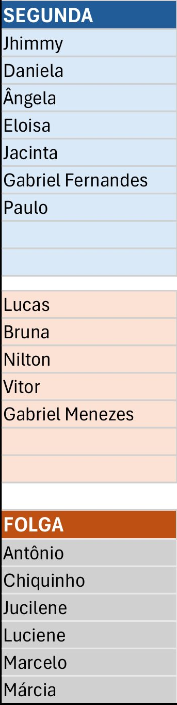
Azul: turno da manhã · Laranja: turno da noite · Cinza: folga · Amarelo: ajuste destacado na planilha.
Terça-feira · 15/12/2026
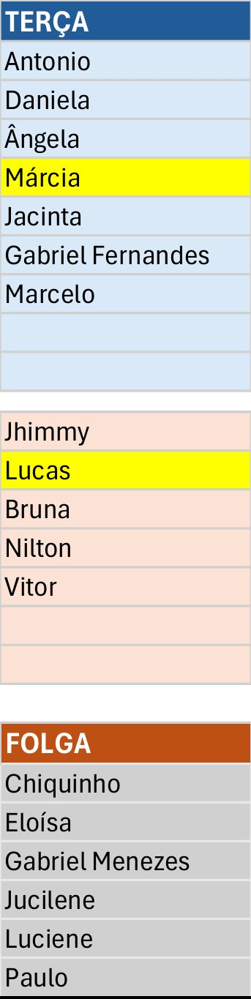
Azul: turno da manhã · Laranja: turno da noite · Cinza: folga · Amarelo: ajuste destacado na planilha.
Quarta-feira · 16/12/2026
Azul: turno da manhã · Laranja: turno da noite · Cinza: folga · Amarelo: ajuste destacado na planilha.
Quinta-feira · 17/12/2026
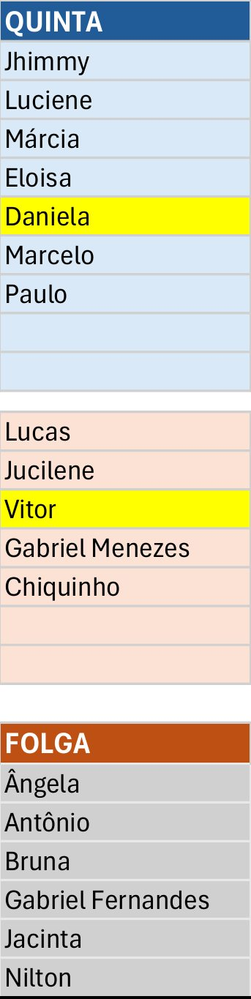
Azul: turno da manhã · Laranja: turno da noite · Cinza: folga · Amarelo: ajuste destacado na planilha.
Sexta-feira · 18/12/2026
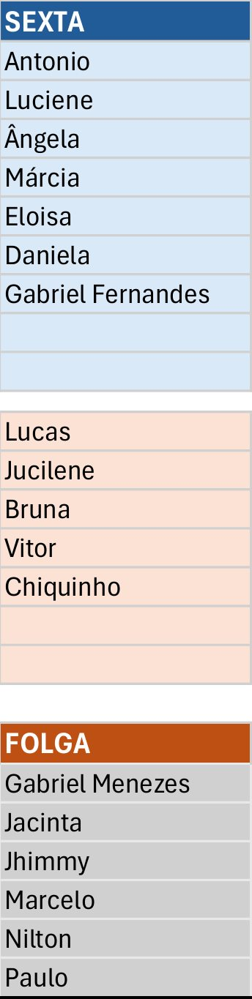
Azul: turno da manhã · Laranja: turno da noite · Cinza: folga · Amarelo: ajuste destacado na planilha.
Sábado · 19/12/2026
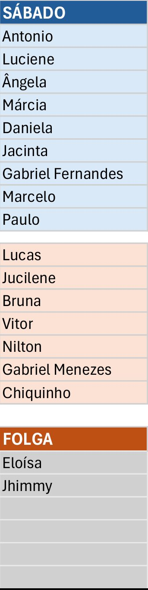
Azul: turno da manhã · Laranja: turno da noite · Cinza: folga · Amarelo: ajuste destacado na planilha.
Domingo · 20/12/2026
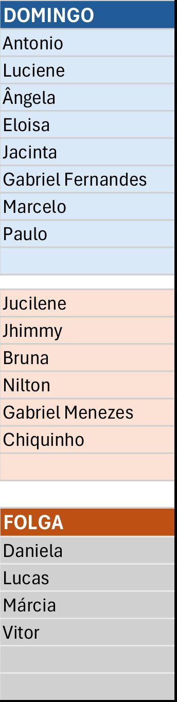
Azul: turno da manhã · Laranja: turno da noite · Cinza: folga · Amarelo: ajuste destacado na planilha.
Ver a semana inteira
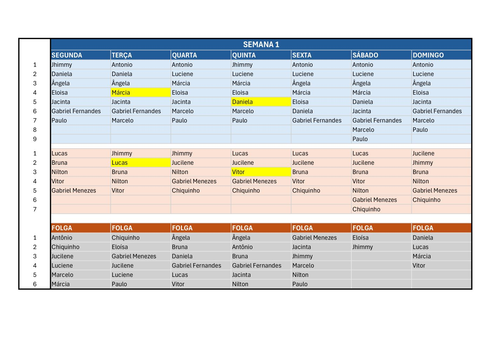
Semana 2
21/12/2026 a 27/12/2026
Segunda-feira · 21/12/2026
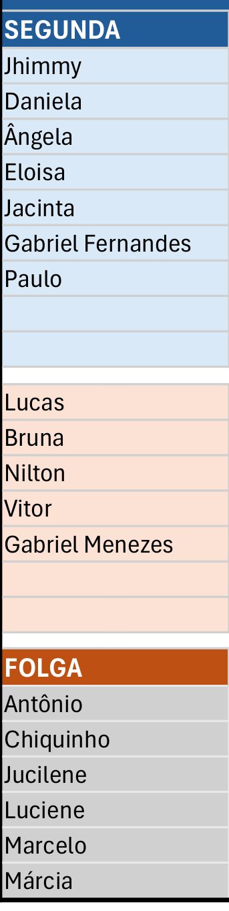
Azul: turno da manhã · Laranja: turno da noite · Cinza: folga · Amarelo: ajuste destacado na planilha.
Terça-feira · 22/12/2026
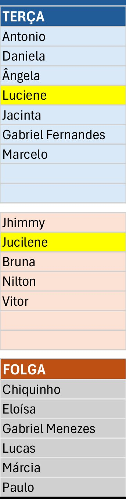
Azul: turno da manhã · Laranja: turno da noite · Cinza: folga · Amarelo: ajuste destacado na planilha.
Quarta-feira · 23/12/2026
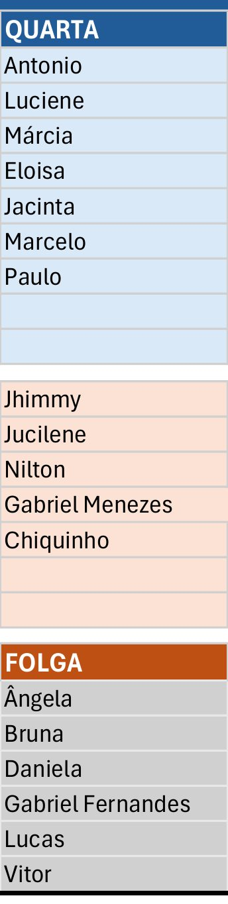
Azul: turno da manhã · Laranja: turno da noite · Cinza: folga · Amarelo: ajuste destacado na planilha.
Quinta-feira · 24/12/2026
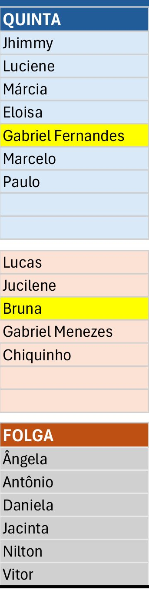
Azul: turno da manhã · Laranja: turno da noite · Cinza: folga · Amarelo: ajuste destacado na planilha.
Sexta-feira · 25/12/2026
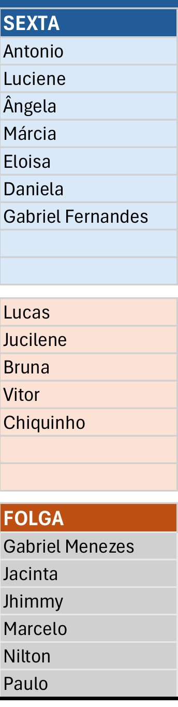
Azul: turno da manhã · Laranja: turno da noite · Cinza: folga · Amarelo: ajuste destacado na planilha.
Sábado · 26/12/2026
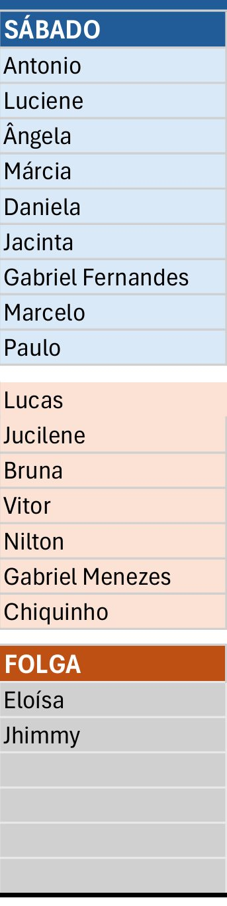
Azul: turno da manhã · Laranja: turno da noite · Cinza: folga · Amarelo: ajuste destacado na planilha.
Domingo · 27/12/2026
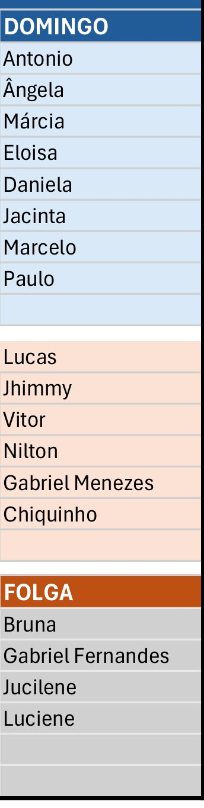
Azul: turno da manhã · Laranja: turno da noite · Cinza: folga · Amarelo: ajuste destacado na planilha.
Ver a semana inteira
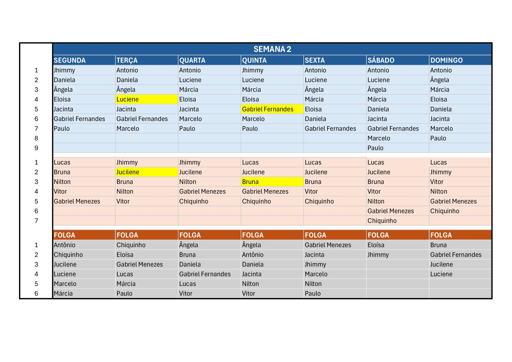
Semana 3
28/12/2026 a 03/01/2027
Segunda-feira · 28/12/2026
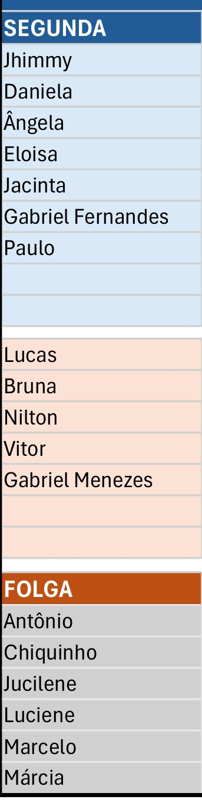
Azul: turno da manhã · Laranja: turno da noite · Cinza: folga · Amarelo: ajuste destacado na planilha.
Terça-feira · 29/12/2026
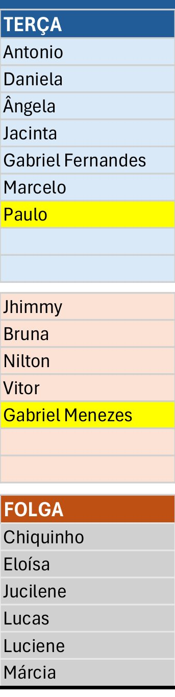
Azul: turno da manhã · Laranja: turno da noite · Cinza: folga · Amarelo: ajuste destacado na planilha.
Quarta-feira · 30/12/2026
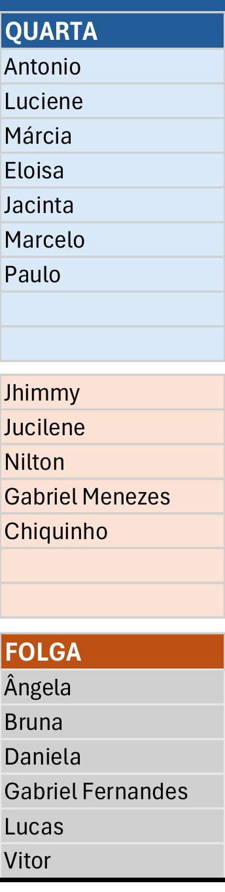
Azul: turno da manhã · Laranja: turno da noite · Cinza: folga · Amarelo: ajuste destacado na planilha.
Quinta-feira · 31/12/2026
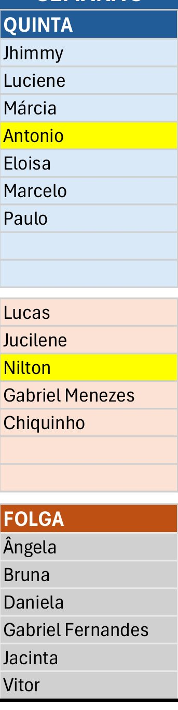
Azul: turno da manhã · Laranja: turno da noite · Cinza: folga · Amarelo: ajuste destacado na planilha.
Sexta-feira · 01/01/2027
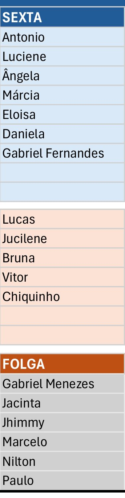
Azul: turno da manhã · Laranja: turno da noite · Cinza: folga · Amarelo: ajuste destacado na planilha.
Sábado · 02/01/2027
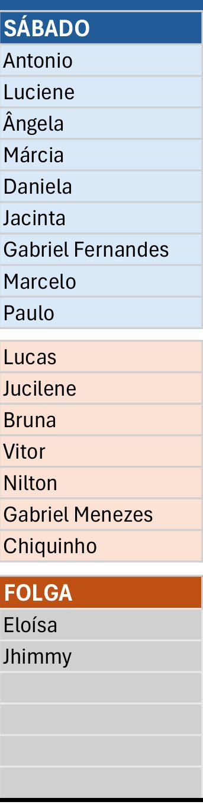
Azul: turno da manhã · Laranja: turno da noite · Cinza: folga · Amarelo: ajuste destacado na planilha.
Domingo · 03/01/2027
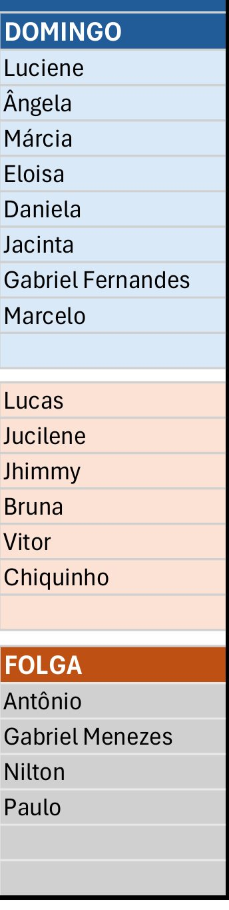
Azul: turno da manhã · Laranja: turno da noite · Cinza: folga · Amarelo: ajuste destacado na planilha.
Ver a semana inteira

Semana 4
04/01/2027 a 10/01/2027
Segunda-feira · 04/01/2027
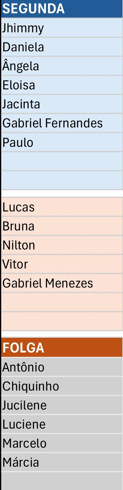
Azul: turno da manhã · Laranja: turno da noite · Cinza: folga · Amarelo: ajuste destacado na planilha.
Terça-feira · 05/01/2027
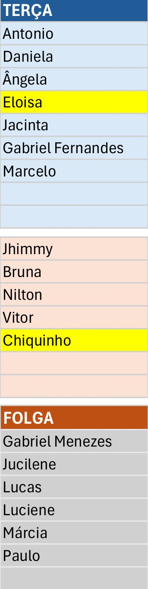
Azul: turno da manhã · Laranja: turno da noite · Cinza: folga · Amarelo: ajuste destacado na planilha.
Quarta-feira · 06/01/2027
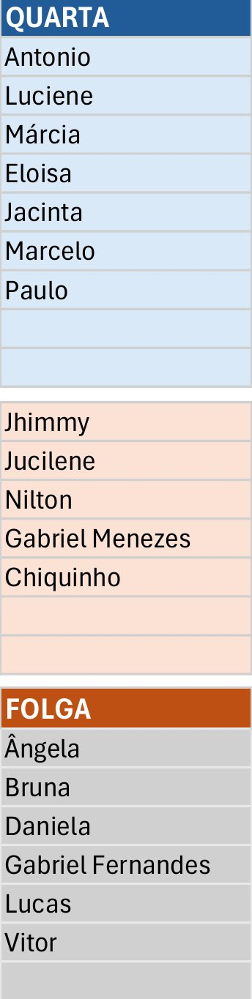
Azul: turno da manhã · Laranja: turno da noite · Cinza: folga · Amarelo: ajuste destacado na planilha.
Quinta-feira · 07/01/2027
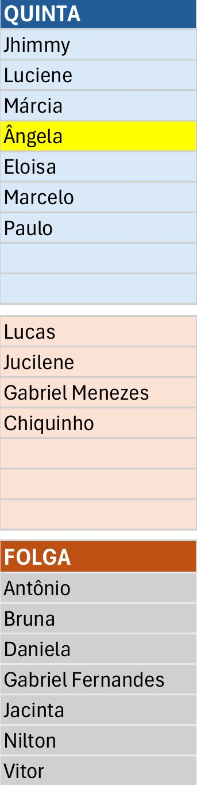
Azul: turno da manhã · Laranja: turno da noite · Cinza: folga · Amarelo: ajuste destacado na planilha.
Sexta-feira · 08/01/2027
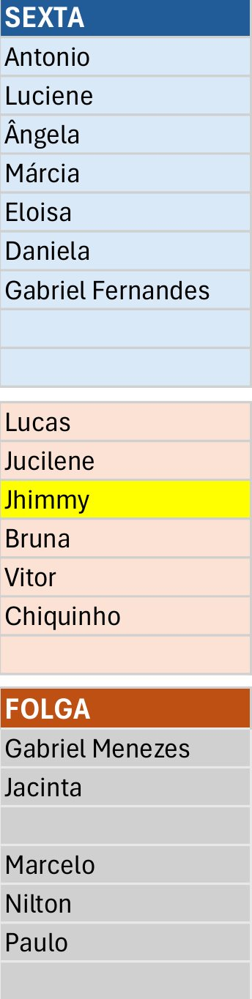
Azul: turno da manhã · Laranja: turno da noite · Cinza: folga · Amarelo: ajuste destacado na planilha.
Sábado · 09/01/2027
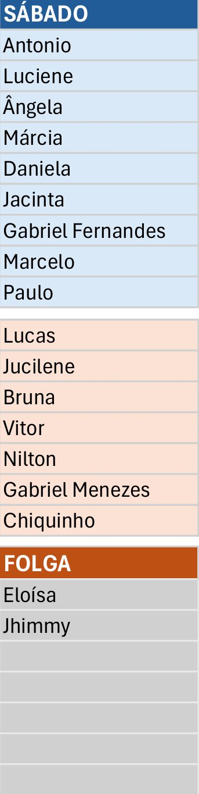
Azul: turno da manhã · Laranja: turno da noite · Cinza: folga · Amarelo: ajuste destacado na planilha.
Domingo · 10/01/2027
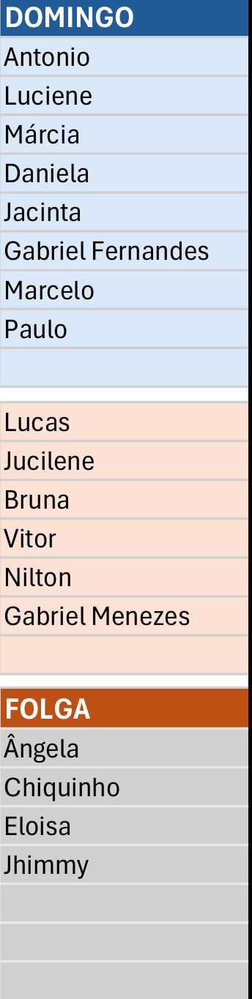
Azul: turno da manhã · Laranja: turno da noite · Cinza: folga · Amarelo: ajuste destacado na planilha.
Ver a semana inteira

Semana 5
11/01/2027 a 17/01/2027
Segunda-feira · 11/01/2027
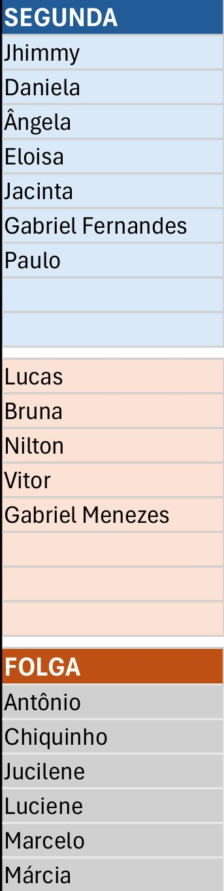
Azul: turno da manhã · Laranja: turno da noite · Cinza: folga · Amarelo: ajuste destacado na planilha.
Terça-feira · 12/01/2027
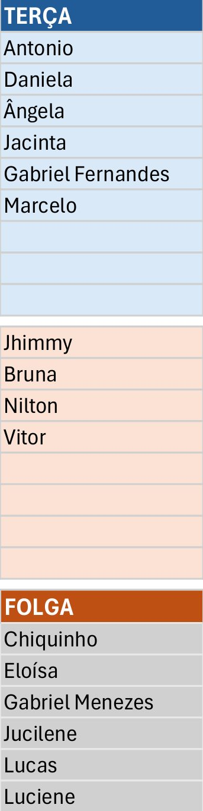
Azul: turno da manhã · Laranja: turno da noite · Cinza: folga · Amarelo: ajuste destacado na planilha.
Quarta-feira · 13/01/2027
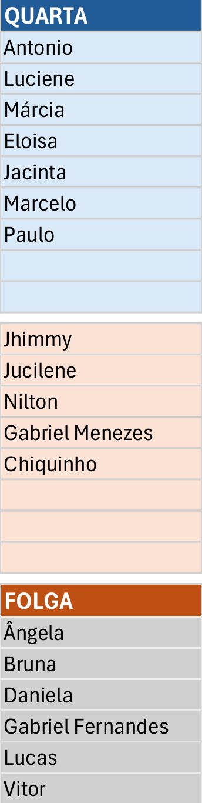
Azul: turno da manhã · Laranja: turno da noite · Cinza: folga · Amarelo: ajuste destacado na planilha.
Quinta-feira · 14/01/2027
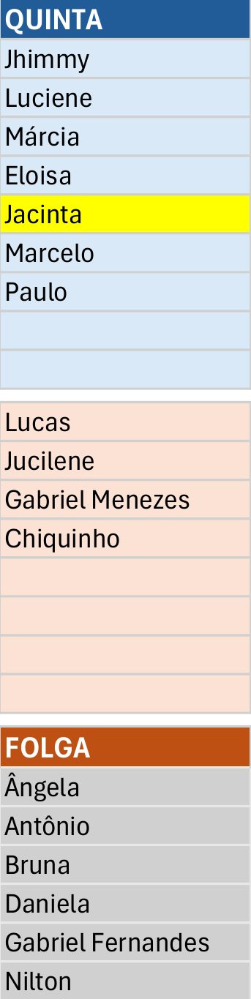
Azul: turno da manhã · Laranja: turno da noite · Cinza: folga · Amarelo: ajuste destacado na planilha.
Sexta-feira · 15/01/2027
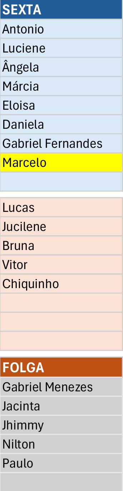
Azul: turno da manhã · Laranja: turno da noite · Cinza: folga · Amarelo: ajuste destacado na planilha.
Sábado · 16/01/2027
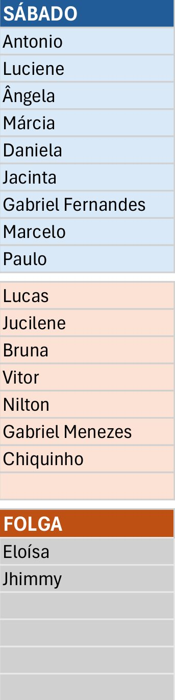
Azul: turno da manhã · Laranja: turno da noite · Cinza: folga · Amarelo: ajuste destacado na planilha.
Domingo · 17/01/2027
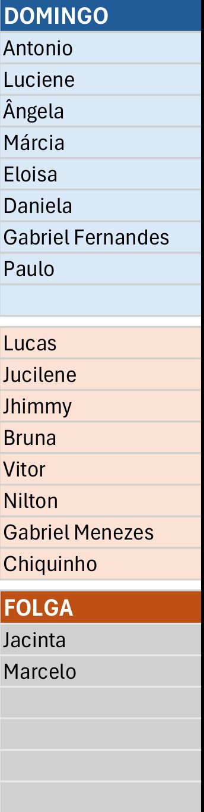
Azul: turno da manhã · Laranja: turno da noite · Cinza: folga · Amarelo: ajuste destacado na planilha.
Ver a semana inteira

Folgas da equipe
Tabela de referência de primeira e segunda folga e rodízio de domingos.
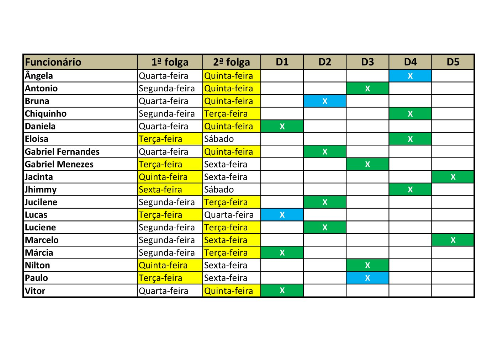
Para confirmar uma semana específica, consulte também os dias da escala semanal acima.